냐류98, 우리들의 보스

냐류98 |
|---|
|
| 냐류98 유튜브/치지직 프로필 |
| 이름 | 냐류98 |
|---|---|
| 나이 | 29세 |
| 성별 | 낭자 |
| 직업 | 보스 |
| 팬네임 | 벨트단 |
| 상징 색 | 노란색(#fef63d) |
| 상징 로고 | |
| 주거지 | 인천 ◯◯구 |
| 생년월일 | 1997/02/27 |
| 구독자 수 |
유튜브: 1.41만명 치지직: 2.5천명 |
보스에 대해 알아보자!
보스 뿐 아니라 오토코노코를 처음 보면 대부분 '이게... 남자?' 라고 생각할게 뻔한데 놀랍게도(?) 남자다.
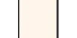 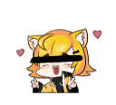
처음 온 신입 벨트단들은 쫌 수위가 쎄서 당황할 수 있는데 놀랍게도 이게 수위를 쫌 낮춘거다.
유튜브에 옛날 동영상들 보면 지금이 꽤 수위를 낮춘걸 알 수 있다.
옛 동양상 보면 ㅅㅅ가 꽤 나온다.
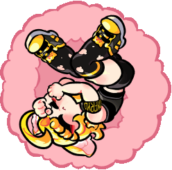
펠트단 코퍼레이션(디스코드 서버)의 음성채팅에 가끔 보스가 출몰한다.
왠만하면 거기서 게임을 하고 계신다.
거기서 보스가 화면공유를 안키고 있다면 높은 확률로 잠을 자고 계실거다.
가끔식 보스가 돌발행동을 하는데 주로 무언갈 핧는 소리, ㅅㅅ아니면 교미를 외친다.
우리 보스는 참 귀엽다. 본인은 아니라고 하지만 치지직 클립들을 보면 보스가 귀엽다는 명백한 사실이 된다.
보스는 남자지만 그냥 암컷 그 자체다. 그 이유는
1. 목소리가 여자같다!
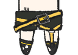처음 듣는 사람은 '남자...?' 라고 생각할 법한 목소리다.
심지어 신음소리도 잘 내니...
2. 가슴이 있다.
여유증(여성형 유방증)으로 인해 가슴이 있다.
3. 무정자증이다.
예전 정자키트 컨텐츠에서 정자가 없는것으로 확인됬다.
이정도면 진짜 암컷이다.
보스는 색맹(정확히는 색감이상자마 맞는표현)이다.
보스가 보는 세상과 우리가 보는 세상의 차이를 비교하는 카페 개시글에서 보스는 어떤 색으로 세상을 보는지 알 수 있다.
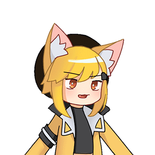
보스는 예전에 호주에서 살았었다.
호주에 있었을때 수영선수로 활동했었다.
보스가 가장 좋아하는 음식은 계란말이다.
계란말이중에서도 야체만 송송 썰어넣은 한국식 반숙 계란말이다.
계란말이를 좋아하게 된 이유는 호주에서 살전 시절,
집안이 조금 안좋아서 힘들었었는데
집 자리 잡고나서 처음 먹은 음식이 계란말이라고 한다.
반대로 보스가 싫어하는 음식은 랍스터라고한다.
왜냐하면 보스가 갑각류룰 싫어해서라고한다.
보스는 왠만한 음악 장르를 다 좋아하는데 그중 재즈를 가장 좋아하신다고 한다.
보스의 MBTI는 INFP 라고 한다.
냐류98에서 98의 의미는 2%부족한 98%의 사림이 되자는 의미다.
벨트단에 대해 알아보자!
팬내임이 벨트단인 이유는?
보스가 롤(리그 오브 레전드)에 나오는 징크스를 좋아하는데
그 징크스의 무수한 벨트가 달려있는 모습을 보고 '벨트가 좋은건가?' 하며 본인도 벨트를 차기 시작했고,
그 후, 고양이들에게 씌우다 보니 '어라? 벨트단이네?' 해서 벨트단이 되었다고 한다.
그럼 초창기 팬네임은?
초창기 팬네임은 캔따개 라고 한다.
이유는 보스가 고양이니까. (놀랍게도 진짜다.)
사파단
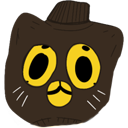
무엇인지 모를 욕망과 잘못된 믿음의 광기로 지배된 벨트단
TMI: 사이트 개발자는 사파단이다.
마웨단
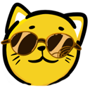 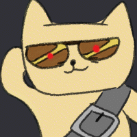행동력 있고 활기찬 열정있는 벨트단
낙서단
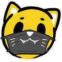 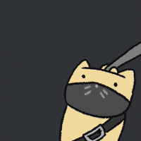여러가지 창작믈을 만들어 공유하는 벨트단
수집단
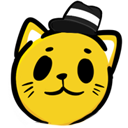 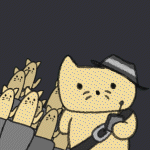방송과 관련돤 모든 정보를 공유하는 벨트단
종겜단(구 만물상)
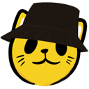 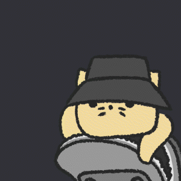영상과 게임, 물건 등을 추천•수집하는 벨트단
타겟단
냐류의 심기를 적정선에서 건들여 욕설과 활정을 수집하는 음지의 벨트단.
그들은 매도를 즐기는 듯 하다.
벨트단들은 위에서 설명한 다섯종류로 나뉜다.
그 외에도 다양하고 신기한것들을 하는 벨트단들도 있다.
흙조림과 맛있는 돌!
흙조림
벨트단들의 영양을 책임지는 훌륭한 한끼 식사이다.
맛은 흙을 퍼먹은것 같은 식감이다.
몇명의 벨트단들은 흙조림에 가끔 큰 돌이 숨어있어서 불만이 많다.
※ 이상하게 마웨단은 흙조림을 더 선호한다.

맛있는 돌
왠지 모르게 돌에서 벨트단들이 좋아하는 생선 맛이 난다.
가끔 보스가 포상으로 줄때가 있다.
맛은 짭쪼름한 바다맛이 난다.
빨면 빨수록 감칠맛이 난다.
가끔 꼭 씹어먹겠다고 객기 부리는 벨트단들의 이빨을 많이 부셨다.
※ 가끔 돌이 섞여있다.